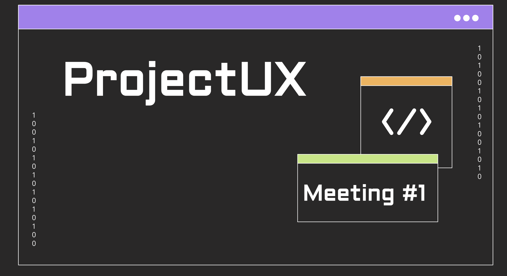
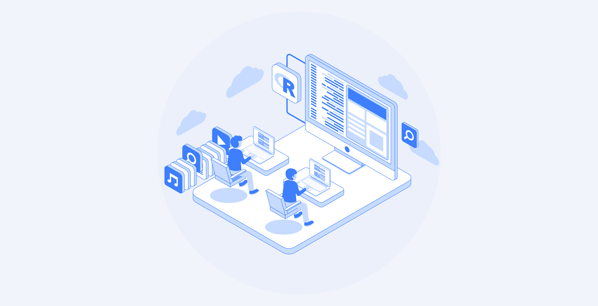

Portfolio
A selection of projects I’ve built through coursework, hackathons, and personal exploration.
Hover Over Images to Learn More!


ProjectUX

 nikita kelwada
nikita kelwada
A selection of projects I’ve built through coursework, hackathons, and personal exploration.
Hover Over Images to Learn More!